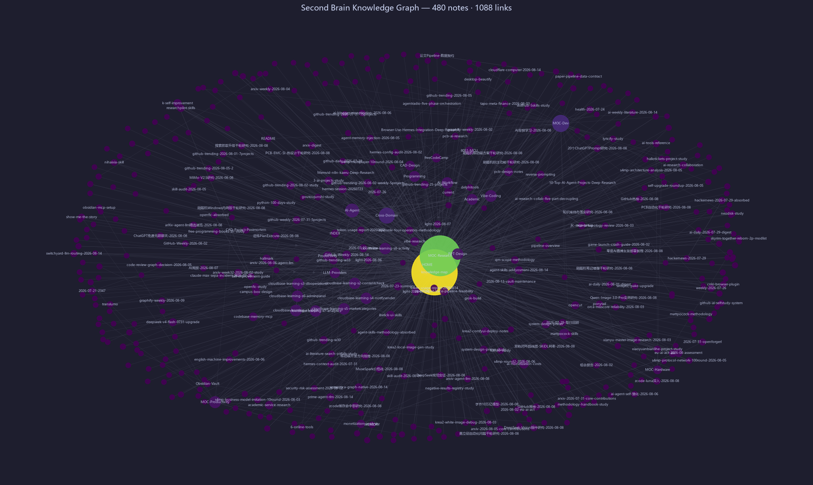

🧠 Second Brain — AI Agent 第二大脑¶


[](https://hermes-agent.dev)
[](https://obsidian.md)
[]()
[]()
**Obsidian + GitHub + Hermes Agent = 持续自我进化的知识体系**
🤔 这是什么？¶

这是一个基于 Obsidian + Hermes Agent 的自进化知识库系统。它不是一个死的笔记集合，而是一个会自己学习、自己进步、自己进化的「第二大脑」。
每一次工具调用失败、每一次用户反馈、每一次任务没做好，都会被自动提取为可复用的规则，固化成 Skill，让下次做得更好。
🌍 真实世界事件
↓
🔍 感知吸收（arXiv 论文 / GitHub Trending / 工具研究）
↓
🧠 知识消化（分类 / 关联 / 提取可应用点）
↓
⚡ 技能生成（变成可执行的 Skill 文档）
↓
🔄 自举改进（用新技能改进 Agent 自身）
↓
✨ 进化到下一阶段
🧠 核心卖点：七大自举进化系统¶
点击直达对应技能 ↓
| 自举模块 | 解决的核心痛点 | 成熟度 |
|---|---|---|
| 🤝 交互自举 | 凌晨 1 小时投入用户醒来全删了 | ⭐⭐⭐⭐⭐ 5/5 |
| ⚙️ 可靠性自举 | Cron 任务集中雪崩，批量失败 | ⭐⭐⭐⭐⭐ 5/5 |
| 📚 知识自举 | 全天被动响应，零主动知识输入 | ⭐⭐⭐⭐⭐ 5/5 |
| 🔧 工具调用自举 | 同样的工具错误，反复踩坑 | ⭐⭐⭐⭐ 4/5 |
| 💻 代码质量自举 | 同样的代码问题，用户反复纠正 | ⭐⭐⭐⭐ 4/5 |
| 🎨 输出风格自举 | 对话越长，输出风格越跑偏 | ⭐⭐⭐⭐⭐ 5/5 |
| 🧭 上下文管理自举 | 重要信息上下文被稀释，自动遗忘 | ⭐⭐⭐⭐ 4/5 |
系统整体成熟度：22 / 35 = 63%，持续进化中
🗺️ 知识全景树¶
点击直达对应领域目录 ↓
| 图标 | 知识域 | 核心内容 | 代表技能 |
|---|---|---|---|
| 🤖 | Hermes 自举系统 | Agent 七大自举、Cron 自动化、工作流优化 | 自举模式 7 个、GitHub 仓库优化、同步脚本 |
| 🧠 | AI / MLOps | LLM 微调、训练流水线、部署优化 | LlamaFactory 指南、QLoRA 参数调优 |
| 🔧 | 硬件工程 | PCB 设计、嵌入式、3D 建模、开源硬件创业 | PCB 设计自动化、CAD 全流程、单片机边缘 AI |
| 💻 | Web 开发 | 现代 Web 全栈、TypeScript、Next.js | 现代 Web 开发 2026（10 轮研究整合） |
| 🏗️ | 平台开发 | SaaS 架构、多租户、API 设计、计费系统 | 平台开发 2026 完整指南 |
| 📱 | 移动端开发 | Flutter、React Native、跨平台选型 | 跨平台移动端开发 2026 对比指南 |
| 🔐 | 网络安全 / CTF | Web 安全、密码学、逆向工程、入门路线 | CTF 从零开始学习路径 |
| 📚 | 学术科研 | 论文写作、去 AI 化、知网检索、学术变现 | 知网高级检索、论文写作工作流 |
| 🎨 | 设计/多媒体 | PPT 设计、AI 美学、图像生成工具 | PPT 优化、AI 图像生成 |
| 📊 | 效率方法论 | Obsidian 技巧、自动化工作流 | Obsidian 知识图谱、自动化工作流 |
📈 总计：19 个技能，10 大知识域
✨ 五大独特之处¶
- 🚀 国内唯一公开的 Agent 自举系统
- 从真实错误中学习，固化为规则，永远不再踩第二次坑
-
不是死的笔记库，是会自我进化的活的记忆系统
-
🔧 硬件领域深度吊打 99% 开源知识库
- PCB 设计 → 单片机 → CAD 3D 建模 → 硬件创业完整链路
-
嘉立创生态、AI 布局、DFM 左移，2026 最新最佳实践
-
📚 学术咸鱼打工仔全套武器库
- 知网检索 → 论文写作 → 降 AI 率 → PPT 生成 → 闲鱼变现
-
从接活到交付的完整闭环工作流
-
🧠 全中文知识体系
- 针对中文开发者和研究者优化，没有语言障碍
-
所有资料都是中文，直接能用
-
🔄 每小时自动同步更新
- 不是一次性项目，是持续进化的活的知识库
- 22 个 Cron 自动化任务 7×24 小时运行
🚀 30 秒快速上手¶
方式 1：用 Obsidian 打开（推荐）¶
# 1. 克隆仓库
git clone https://github.com/mo9652962-ai/second-brain.git
# 2. 打开 Obsidian
# → 设置 → 金库 → 打开文件夹作为金库
# → 选择刚才克隆的 second-brain 文件夹
# 3. 开始探索！
# 推荐从 HOME.md 开始，或者直接去 skills/ 目录看技能
Obsidian 功能推荐：
- 🎯 按 Ctrl/Cmd + G 打开全局图谱，看知识之间的关联
- 🔍 用 Dataview 插件查询和筛选技能
- 📱 配合 Obsidian Sync 可以在手机/平板上同步使用
方式 2：直接在 GitHub 上浏览¶
直接点上面「知识全景树」里的链接就行，GitHub 直接渲染 Markdown。
📦 最新技能入库 (2026-07-28)¶
MLOps & 训练流水线¶
| 技能 | 版本 | 简介 |
|---|---|---|
| MLOps & LLM Training Pipeline 2026 | v1.0 | LlamaFactory + Unsloth + QLoRA 完整微调指南 |
移动端 & 安全¶
| 技能 | 版本 | 简介 |
|---|---|---|
| 跨平台移动端开发 2026 | v1.0 | Flutter vs React Native 深度对比 + AI 集成最佳实践 |
| CTF 网络安全入门指南 | v1.0 | Web/密码/逆向/Pwn 从零开始学习路径 + 6 个月就业路线图 |
🤖 自动化体系 (22 个 Cron)¶
| 频率 | 时间 | 任务 | 核心功能 |
|---|---|---|---|
| 🔵 每日 | 07:00 | arXiv 论文抓取 | AI Agent / LLM 领域最新论文入库 |
| 🔵 每日 | 08:00 | arXiv 论文精读 | 精选 2-3 篇深度解读，提取可应用点 |
| 🔵 每日 | 08:15 | 健康检查 | API 连通性、Cron 状态、磁盘、内存 |
| 🔵 每日 | 08:30 | 自我反思 + 知识吸收检查 | 每日三改进点 + 防零产出守门人 |
| 🔵 每日 | 18:00 | 变现回顾 | 闲鱼接单复盘、定价策略优化 |
| 🔵 每日 | 20:00 | 待办执行器 | 全库扫描 TODO 并自动执行 |
| 🟢 每 30 分钟 | GitHub 同步 | 自动推送知识变更 | |
| 🟡 每周日 | 10:00 | 知识整合周更 | 知识图谱更新、清理、成本报告 |
| 🟡 每周 | 周一 07:00 | 文献周报 | 一周学术前沿汇总 |
🏗️ 技术栈¶
| 层 | 技术 |
|---|---|
| Agent 平台 | OpenClaw / Hermes Agent Framework |
| 主模型 | opencode-go / DeepSeek-v4-flash → Doubao-seed 2.0 pro |
| 视觉模型 | Doubao Vision 1.5 |
| 知识库引擎 | Obsidian (Dataview + Graph View) |
| 版本控制 | Git + GitHub (每 30 分钟自动同步) |
| MCP 服务 | GitHub · Filesystem · JLCPCB · Obsidian · Browser |
| 自动化引擎 | Hermes Cron Scheduler (22 个定时任务) |
📊 仓库统计¶
📁 总大小：约 10MB
📝 Markdown 文件：200+
🧠 Skill 文档：19 个
🗂️ 知识域：10 个
⏰ 首次提交：2026 年 3 月
🔄 平均更新频率：每 30 分钟自动同步
🎨 进阶玩法¶
GitHub Pages 知识网站¶
如果你想把这个知识库变成一个美观的静态网站，可以用 MkDocs 或 VitePress：
# MkDocs Material（推荐，最简单）
pip install mkdocs-material
mkdocs new .
# 配置 mkdocs.yml，然后
mkdocs serve # 本地预览
mkdocs gh-deploy # 部署到 GitHub Pages
Hermes Agent 加载技能¶
如果你也在用 Hermes Agent，可以直接加载这些技能：
# 加载任意技能
skill_view(name="mlops-llm-training-pipeline")
skill_view(name="github-repo-optimization")
# 全部技能列表
skills_list()
🤝 参与贡献¶
欢迎提交 PR 补充内容！
- 发现错误？提个 Issue 或者直接 PR 修复
- 有想补充的领域？欢迎新增 Skill
- 有好的学习资源？加入对应的知识域
📄 许可证¶
MIT License - 随便用，如果你觉得有用，可以给个 ⭐ Star
**用知识武装大脑，用自举加速进化 🚀**